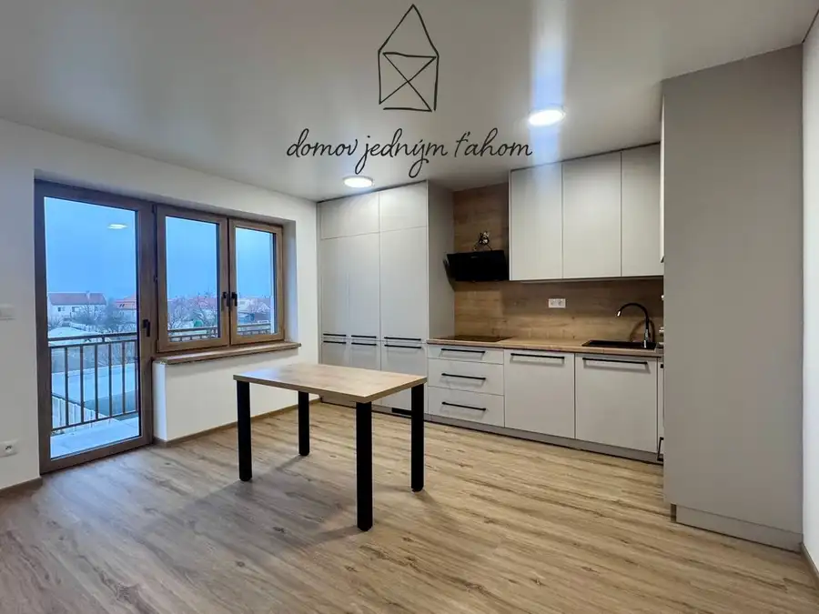

PRENÁJOM priestranný 3-izbový byt s terasou, garáž, Stupava
Stupava
- Dispozícia3-izbový
- Plocha73.43 m²
- Poschodie1. z 5
- StavNovostavba
- Energetická triedaB
O nehnuteľnosti
Realitná kancelária Domov jedným ťahom Vám exkluzívne ponúka na prenájom 3-izbový byt so zasklenou terasou v pokojnej lokalite na Vajanského ulici v Stupave.Byt o rozlohe 73,47 m2 vrátane pivničnej kobky (2,07 m2) sa nachádza na prízemí zatepleného tehlového bytového domu. K bytu prislúcha zasklená terasa o rozlohe 8,48 m2.BYTOVÝ DOM:Bytový dom bol postavený v roku 1998. Ide o menší bytový dom s príjemnou atmosférou. Vo vchode sa nachádza len 12 bytov, čo prispieva k pokojnému bývaniu a dobrým susedským vzťahom. Bytový dom je zateplený.BYT:Byt pozostáva z 3 obytných miestností a príslušenstva, ktorým je kuchyňa, kúpeľňa, samostatné WC, vstupná chodba a latková pivnica, ktorá sa nachádza v suteréne bytového domu.DISPOZÍCIA:Zo vstupnej chodby sa vchádza do jednotlivých izieb (obývacia izba a 2x spálňa) , do kúpeľne a WC. Obývacia izba je prepojená s kuchyňou, z ktorej sa vchádza na zasklenú terasu.Výhodou bytu je vlastný plynový kotol (zn. Vaillant) umiestnený v kuchyni, ktorý zabezpečuje nezávislé vykurovanie a ohrev vody, čo prináša kontrolu nad nákladmi na bývanie.LOKALITA:Výhodou bytu je poloha v tichej a zelenej časti sídliska s výbornou občianskou vybavenosťou a skvelou dostupnosťou do centra mesta.Lokalita poskytuje kompletnú občiansku vybavenosť (potraviny, služby, školy, škôlky), dobrú dostupnosť do Bratislavy autom aj autobusovou dopravou (pravidelné autobusové spojenie) a zároveň pokojné bývanie blízko prírody.PARKOVANIE:Spolu s bytom sa prenajíma aj garáž nachádzajúca sa priamo oproti bytovému domu, čo predstavuje výrazný benefit z hľadiska parkovania aj úložného priestoru. Parkovanie je zároveň možné aj na voľných parkovacích miestach na priľahlom parkovisku priamo pred domom.CENA:1100 Eur/mesiac za byt spolu s garážou vrátane energií, internetu (800/200 Mbit/s) a TV (max. 2 nájomcovia)Platba: nájomné za prvý mesiac vrátane energií vo výške 1100 Eur + vratný depozit vo výške 1100 Eur + provízia RK.Pre viac informácií resp. v prípade záujmu o obhliadku nás kontaktujte na tel. č.: +421 907 763 123 alebo e-mailom na anita.domovjednymtahom@gmail.com.Dohodnite si obhliadku ešte dnes. Bližšie informácie Vám radi poskytneme telefonicky alebo e-mailom.KONTAKT:Mgr. Ing. Anita Kelemenová+421 907 763 123anita.domovjednymtahom@gmail.comText a fotografie sú autorským dielom a majetkom realitnej kancelárie Domov jedným ťahom.
Parametre
| Cena vrátane energií | Áno |
|---|---|
| Druh | 3 izbový byt |
| Dátum zverejnenia | 14. 6. 2026 |
| Energetický certifikát budovy | B |
| Podlažie | 1 |
| Počet izieb / miestností | 3 |
| Počet nadzemných podlaží | 5 |
| Počet pivníc | 1 |
| Počet spální | 1 |
| Rok výstavby | 1998 |
| Stav nehnuteľnosti | Novostavba |
| Telekomunikácie | Internet, Káblová TV |
| Terás | 1 |
| Typ | Prenájom |
| Typ konštrukcie | Tehlová |
| Vybavenie | Terasa, Pivnica, Garáž |
| Vykurovanie | Lokálne |
| Úžitková plocha | 73.43 m² |
Kde to je


Mohlo by Vás zaujímať
 BytNové10
235 000 €PREDAJ, priestranný 3-izbový byt, terasa, vlastné kúrenie, Stupava
Stupava
3-izbový73.47 m²1. podlažie
Realitná kancelária Domov jedným ťahom Vám exkluzívne ponúka na predaj priestranný 3-izbový byt so zasklenou terasou v pokojnej lokalite na…
BytNové10
235 000 €PREDAJ, priestranný 3-izbový byt, terasa, vlastné kúrenie, Stupava
Stupava
3-izbový73.47 m²1. podlažie
Realitná kancelária Domov jedným ťahom Vám exkluzívne ponúka na predaj priestranný 3-izbový byt so zasklenou terasou v pokojnej lokalite na…

BytNové10 125 000 €PREDAJ, moderný 2-izbový byt v novostavbe, 2 x loggia, 2 x parkovacie státie, Trstice Trstice 2-izbový63.03 m²3. podlažie Realitná kancelária Domov jedným ťahom Vám prináša atraktívnu ponuku 2 – izbových bytov dokončených do štandardu v novom projekte so 6 bytovými…